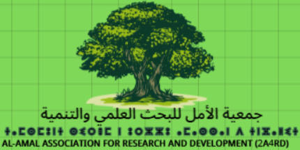

ICISTA 2027
The International Conference on Intelligent Systems, Technologies and Applications
Hybrid Conference (In-person and Online)
May 03–04, 2027 | Agadir, Morocco

The International Conference on Intelligent Systems, Technologies and Applications
Hybrid Conference (In-person and Online)
May 03–04, 2027 | Agadir, Morocco


Fabien LOTTE obtained a M.Sc., a M.Eng. and a PhD degree in computer sciences, all from the National Institute of Applied Sciences (INSA) Rennes, France, in 2005 (M.Sc., M.Eng.) and 2008 (PhD). His PhD Thesis received both the PhD Thesis award 2009 from AFRIF (French Association for Pattern Recognition) and the PhD Thesis award 2009 accessit (2nd prize) from ASTI (French Association for Information Sciences and Technologies).
In 2009 and 2010, he was a research fellow at the Institute for Infocomm Research (I2R) in Singapore, working in the Brain-Computer Interface Laboratory. From January 2011 to September 2019, he was a Research Scientist (with tenure) at Inria Bordeaux Sud-Ouest, France, in team Potioc (http://team.inria.fr/potioc/). He obtained an Habilitation (HDR) in Computer Science from the University of Bordeaux in September 2016.
Between October 2016 and January 2018, he spent 1-year as a visiting scientist at RIKEN Brain Science Institute, Japan, in Cichocki's laboratory for advanced brain signal processing. Since October 2019, he is a Research Director (DR2) at Inria Bordeaux Sud-Ouest, France, still in team Potioc.
His research interests include Brain-Computer Interfaces (BCI), human-computer interaction, pattern recognition and brain signal processing. He is part of the editorial boards of the journals Brain-Computer Interfaces (since 2016), Journal of Neural Engineering (since 2016) and IEEE Transactions on Biomedical Engineering (since 2021). He is also co-specialty chief editor of Frontiers in Neuroergonomics: Neurotechnology and System Neuroergonomics. He co-edited the books "Brain-Computer Interfaces 1: foundations and methods" and "Brain-Computer Interfaces 2: technology and applications", published both in French and in English in 2016, as well as the book "Brain-Computer Interfaces Handbook: Technological and Theoretical Advance" published in 2018. In 2016, he was the recipient of an ERC Starting Grant (project BrainConquest) to develop his research on BCI.
Further keynote speakers are under confirmation and will be added to the program in due course.


